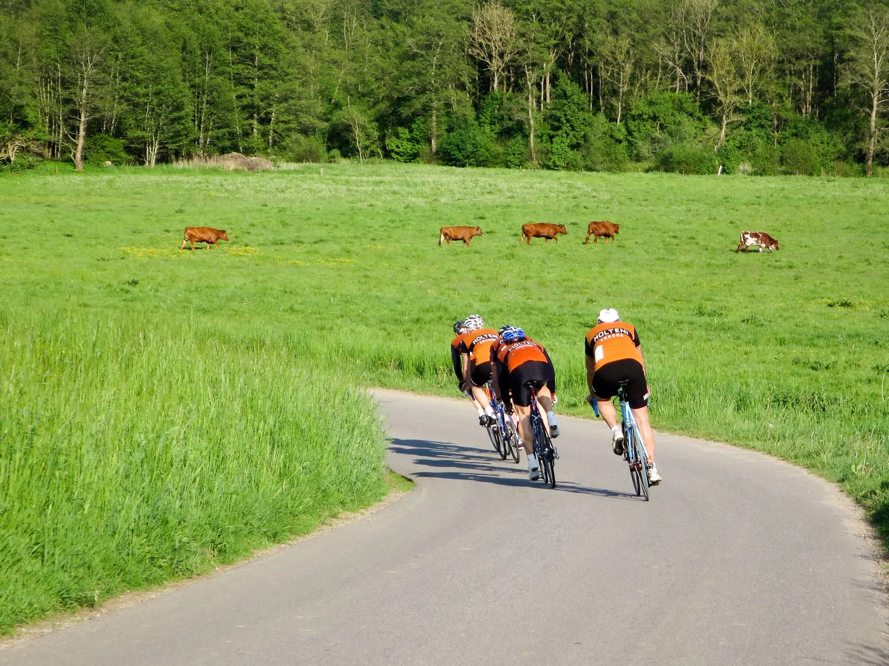
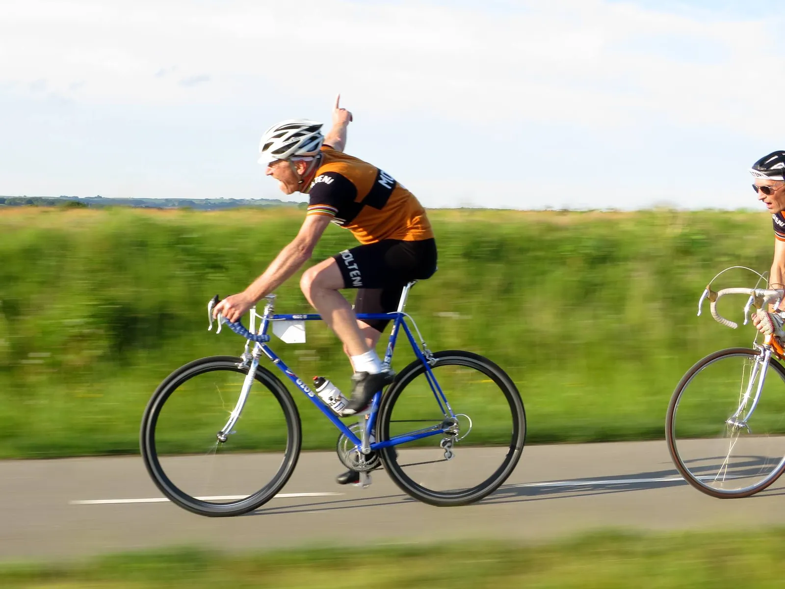
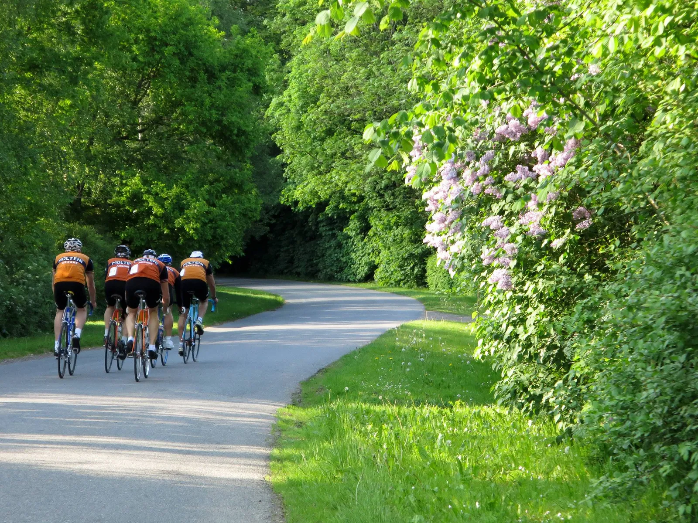
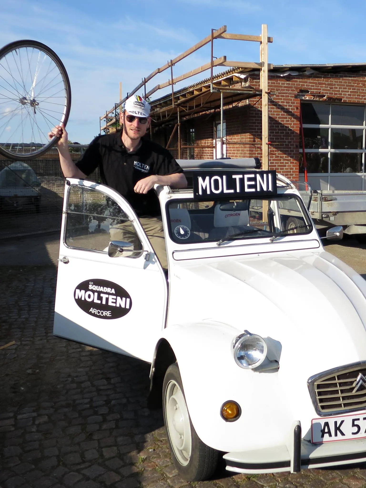

Dramatisk DGI Holdløb Lund 2016

Squadra Molteni skulle endnu engang forsvare farverne i holdets paradedisciplin; holdtidskørslen. Denne gang i et dramatisk holdløb i Lund ved Horsens torsdag aften.
En smuk sommeraften hvor denhårde og småkuperet rute skulle gennemkøres tre gange – i alt 42 kilometer.
Taktikken var klar: ”Vi gør som vi plejer – denne gang vinder vi bare i stedet”, udtalte Per Sandahl, holdets altid bomsolide capitaine de route. Men ak, det gik som det plejer, og det afspejlede placeringen også.
Per beklagede sig endnu engang over en forhåndenværende krise kort inden start, denne gang meldte han om forstørret nyre. Hans spyt blev så sejt, og langtrukken, at det hang fast i asfalten, og ikke ville slippe tungen.
Han blev sat! Men en hurtig manøvre fra sportsdirektøren fik ham med på toget igen. Kort tid efter, blev første hold overhalet. De var startet to minutter forinden.

Med sig i motorrummet havde Per holdets ubestridte belgiske slider, Jens “Le Flandrien” Ankerstjerne, Eigil “Delgado” Leegaard, Niels “Il direttore” Bjørnsteen og, venligst udlånt på endagskontrakt fra Team Peugeot Re-Cycled, Pelle “Le puncheur” Clemmensen.
Herefter var holdet flyvende, og Jens Ankerstjerne animerede hele vejen. Pelle kørte som et schweizisk urværk, stabilt og roligt tonsende han af sted på sin blå Motobecane.

Det var første gang denne holdsammensætningen skulle stå prøven, og med fem store alfahanner, skulle der lidt feminin snilde til at holde på formationen. Holdets altmuligkvinde, Maria, sad derfor som sportsdirektør i følgebilen, og styrede begivenhederne.
– Sådan nogen herrer pruster og stønner jo efter den mindste bakke. De er åbenbart ikke vant til at udfolde sig i mere end et par minutter uden forløsning, lyder det fra Maria.

Eigil var hen mod slutningen ved at gå lidt død, men pisk fra Niels Bjørnsteen gav ham luft til at finde de sidste 100 watt.
Bjørnsteen kørte selv med diamanter i benene, og havde fundet endnu 3,7 ekstra watt ved at klippe lidt af tåklipsremmene. Det gjorde at holdet på sidste omgang tog endnu en overhaling, og dermed var kørt fire minutter ind på de forankørende.
En knæskade havde tvunget holdet til at skifte ud, så Kasper satte sig til rette i følgebilen – med høj luft under mekanikerkasketten og reservehjul ved hånden.
Det blev der dog ikke brug for, så han tog sig en lur. Han vågnede dog op til finalen, hvor han var sikker på, at holdet havde sejret, så jublen i holdbilen var højrystet.

Det hele slutter med endnu en 4. plads. Der er dog nedlagt diverse protester. Men sportsdirektøren var tilfreds, og der blev uddelt kindkys til alle på holdet.
Første og anden omgang køres på præcis samme tid. På tredje omgang taber holdet 20 sekunder, da de er få centimeter fra at kollidere med en gyllevogn. Sportsdirektøren i bilen er rasende, og sætter da også 2CV’en i bak, og kører gyllevognen i grøften ude på Torpvej i Lundum.
Tusind tak for et fantastisk holdløb, hvor der var pølser, vand og øl til deltagerne efter løbet. Det’ god stil!